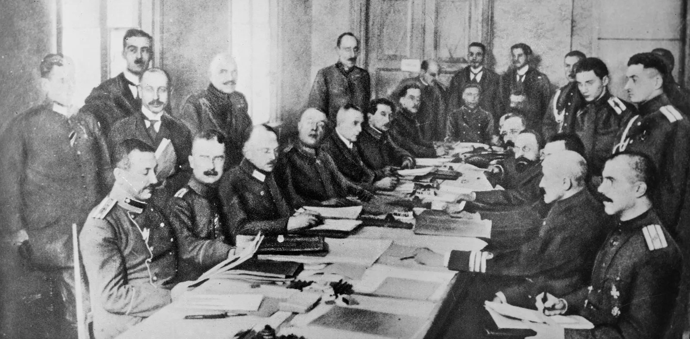
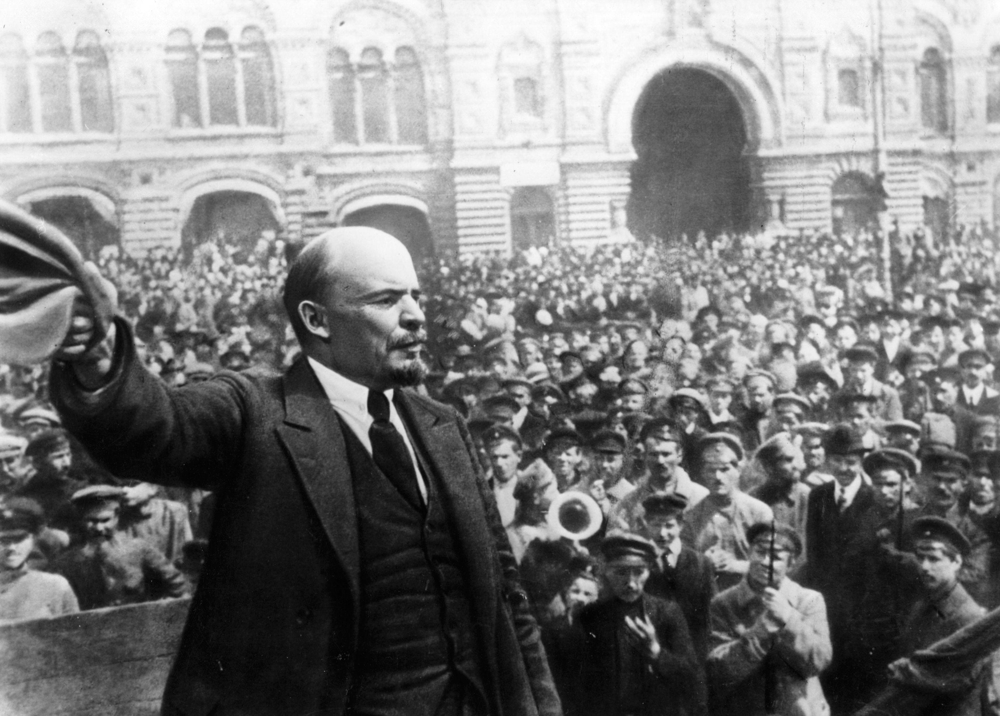
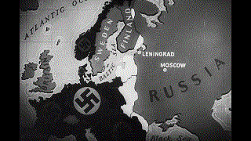
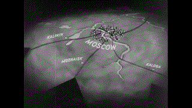
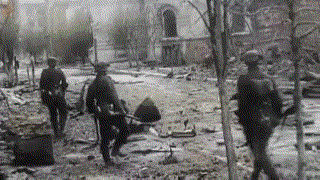
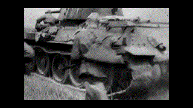
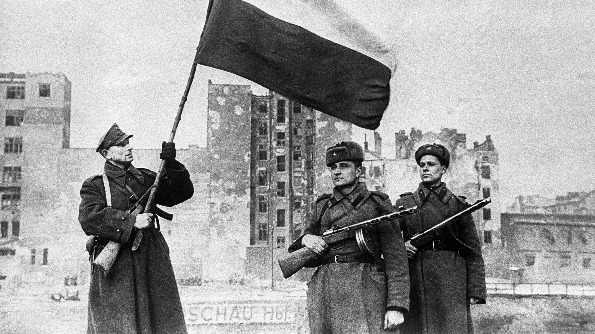
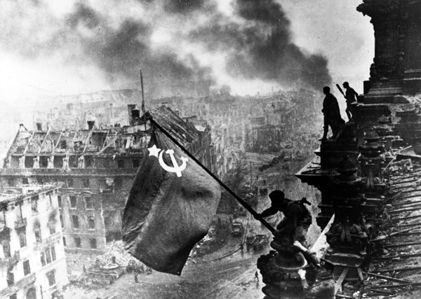

1914 - Assassination of Archduke Franz Ferdinand
In June 1914, Archduke Franz Ferdinand of Austria was assassinated in Sarajevo, a Serbian nationalist an event that would trigger the outbreak of World War I.
Chain Reaction That Led to War:
- Austrian-Hungary blamed Serbia and declared war.
- Russia supported Serbia and mobilized its army.
- Germany supported Austria-Hungary and declared war on Russia.
- Germany declared war on France.
- Germany invaded Belgium to attack France.
- Britain entered the war to defend Belgium.



Ended World War I
The signing of the Treaty of Versailles in 1919 officially ended World War I.








Victorious from World War II
The Soviet Union played a crucial role in the defeat of Nazi Germany, contributing to the Allied victory in Europe.